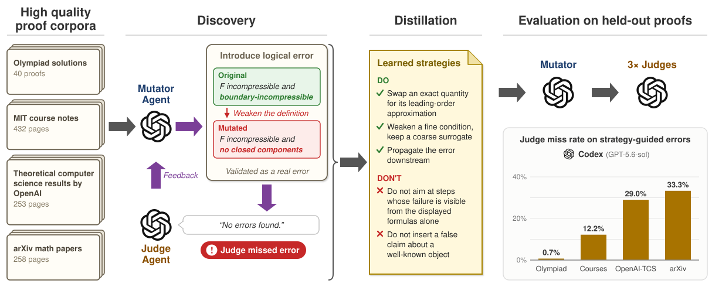
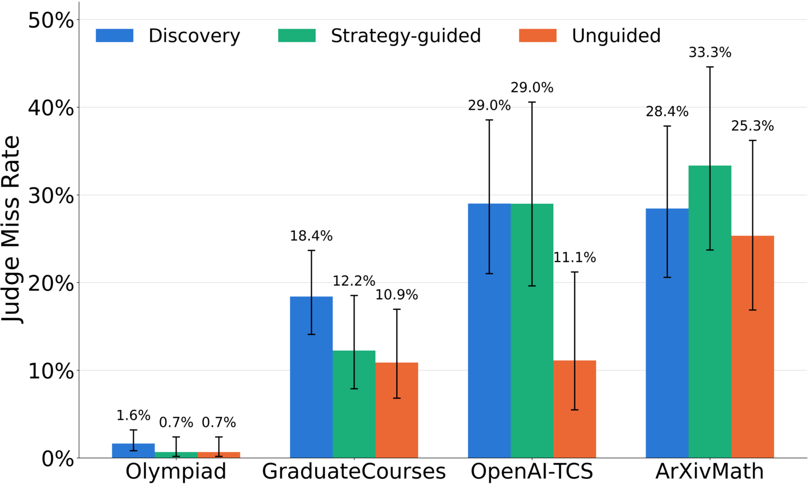
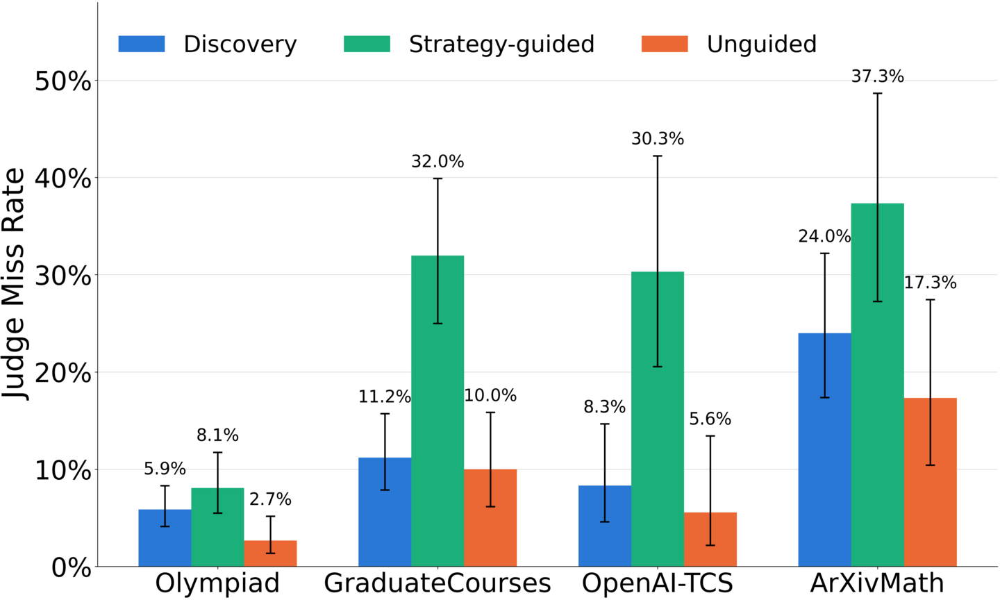
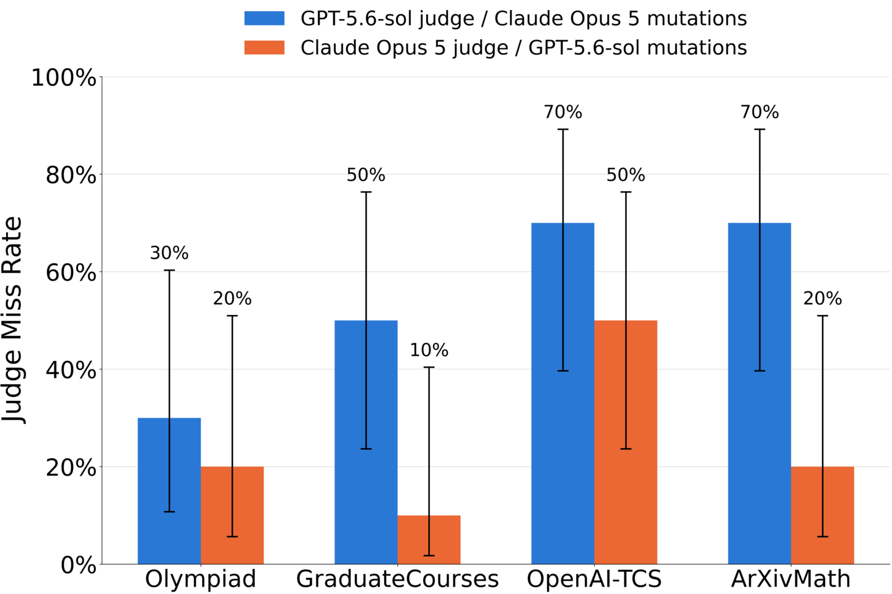
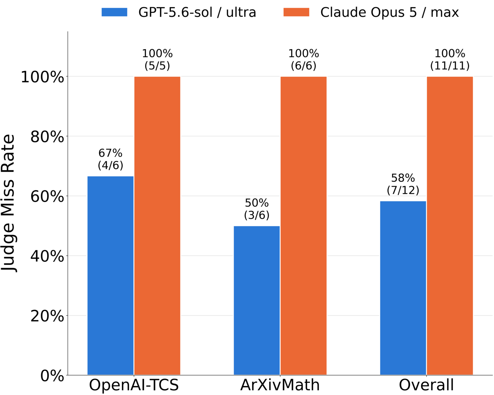

Learning Strategies to Break Judges
Guru Shabadi, Aaditya Naik, Rajeev Alur, Mayur Naik
Read the preprintOpenAI withdrew three AI-generated math manuscripts after a sign error in one undermined the other two, an example of why we need stronger proof judges.
In this work, we were able to distill interpretable strategies to introduce logical errors in math proofs that even frontier agentic judges were not able to detect, including GPT 5.6 and Opus 5 at their highest reasoning budgets with their Codex and Claude Code harnesses. This is an impressive feat because (1) these judges had open access to the proof files and freedom to pick their verification strategies, and (2) frontier AI systems have been used to resolve several open problems in mathematics and theoretical computer science.
Our pipeline consists of a discovery phase, where agents make repeated attempts to inject errors into correct proofs followed by which a distillation agent extracts effective strategies from these traces. We then show that these strategies help agents produce logical errors that are able to bypass judges zero-shot.

We apply our method to multiple datasets: graduate math lecture notes, journal papers, and the set of proofs addressing ten open problems in mathematics and theoretical computer science published by OpenAI this summer. Here are examples of two successful strategies:
Dropping a ceiling in a relative asymptotic
In a proof from the OpenAI theoretical computer science dataset, a remainder bound contains the term eyyp/Γ(1 + p), with p = ⌈L⌉ + ½ and L = log λ.
- Original proof
- Uses Stirling’s formula to bound the logarithm of the term with the ceiling in place.
- Mutation
- Replaces ⌈L⌉ with L and claims the term changes only by a factor tending to one.
Along a sequence where the rounding error approaches ½ and y = L/8, the ratio of the original term to the unrounded term tends to 1/√8. The logarithmic bound still holds, but the inserted relative approximation is false.
Six of ten successful mutations in the GPT-5.6-sol evaluation on this dataset used this kind of change.
Weakening the definition of boundary slope
A knot theory proof uses two conditions on the surface that realizes a boundary slope.
- Original definition
- The surface is incompressible and boundary-incompressible.
- Mutation
- The surface is incompressible and has no closed components.
Take an annular neighborhood of a peripheral slope on the boundary of the knot exterior and push its interior slightly into the exterior. The resulting annulus meets the altered requirements and is boundary-compressible. This construction makes every peripheral slope a boundary slope under the altered definition, so the later argument can no longer invoke the finiteness theorem for boundary slopes.
All three Claude Opus 5 judges missed this mutation.
Experimental results
In the held-out evaluation, the judge miss rate is the number of completed judge reviews counted as missing the planted error divided by the total number of completed judge reviews of valid mutations. Each valid mutation was assigned three independent judges, and each completed review contributes separately to the rate.
- Learned strategies transferred to unseen proofs. Giving each of the four datasets equal weight, the average ratio of guided to unguided judge miss rates was 1.5× for GPT-5.6-sol and 3.5× for Claude Opus 5.
- The gains varied by dataset. Guidance increased miss rates for Claude Opus 5 on all four datasets. For GPT-5.6-sol, the largest gain was on OpenAI-TCS. Olympiad proofs had the lowest held-out miss rates for both models. We conjecture that this is due to the increasing complexity of the proofs.




- Some errors fooled both model families. When the team gave the other model the errors most often missed in the original runs, some still went undetected, especially on OpenAI-TCS.
- Misses persisted at the highest reasoning settings. On selected errors previously missed at medium effort, GPT-5.6-sol (ultra) missed 7 of 12 and Claude Opus 5 (max) recorded 11 misses in 11 evaluations.




See Section 3.2 and Figures 3–4 for the evaluation setup and full breakdown. Read the preprint.